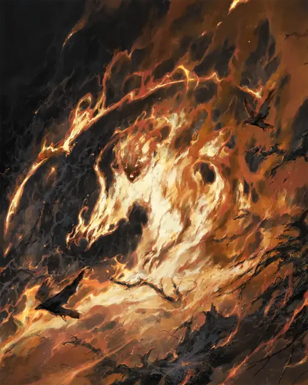

Огненный элементаль
Fire Elemental
Большой Элементаль, Нейтральный

Класс Защиты 13 Инициатива +3 (13)
Хиты 93 (11к10 + 33)
Скорость 50 футов
| мод | спас | ||
|---|---|---|---|
| СИЛ | 10 | +0 | +0 |
| ЛОВ | 17 | +3 | +3 |
| ТЕЛ | 16 | +3 | +3 |
| мод | спас | ||
|---|---|---|---|
| ИНТ | 6 | −2 | −2 |
| МДР | 10 | +0 | +0 |
| ХАР | 7 | −2 | −2 |
Сопротивление урону Дробящий, Колющий, Рубящий
Иммунитеты Огонь, Яд; Бессознательный, Истощение, Окаменевший, Опрокинутый, Опутанный, Отравленный, Парализованный, Схваченный
Чувства Тёмное зрение 60 футов, пассивное Восприятие 10
Языки Первичный (Игнан)
Опасность 5 (1 800 опыта; БВ +3)
Особенности
Аура огня. В конце каждого хода элементаля каждое существо в 10-футовой Эманации, исходящей от элементаля, получает 5 (1к10) урона Огнём. Существа и воспламеняемые объекты в этой Эманации начинают гореть.
Огненное тело. Элементаль может проходить через пространство шириной всего 1 дюйм, не тратя на это дополнительное перемещение. Элементаль также может входить в пространство другого существа и заканчивать там ход; когда элементаль в первый раз за ход входит в пространство другого существа, оно получает 5 (1к10) урона Огнём.
Свечение. Элементаль излучает Яркий свет в радиусе 30 футов и Тусклый свет ещё на 30 футов.
Чувствительность к воде. Элементаль получает 3 (1к6) урона Холодом за каждые 5 футов, которые он перемещается через воду, и за каждый галлон воды, выплеснутый на него.
Действия
Мультиатака. Элементаль совершает две атаки Ожогом.
Ожог. Бросок рукопашной атаки: +6, досягаемость 5 фт. Попадание: 10 (2к6 + 3) урона Огнём. Если цель — существо или воспламеняемый объект, она начинает гореть.
Бонус мастерства +3
Среда обитания Пустыня, Стихийный план Огня
Сокровища Отсутствуют
Огненный элементаль
Первозданный дух жара и пламени
Огненные элементали возникают, когда духи Стихийного плана Огня вселяются в пламя, горячие угли и раскалённый дым. Эти существа вполне осязаемы, хотя по большей части состоят из языков огня и частиц; своими расплывчатыми конечностями они поджигают врагов и всё, что способно гореть. Обычно огненные элементали полыхают оттенками оранжевого и красного, но встречаются и другие цвета. На Материальном плане их, как правило, призывают магией — или они возникают близ разломов в глубине пустынь, у жерл вулканов, посреди лесных пожаров или в потоках магмы, связанных с их родным планом.
Гореть огненные элементали могут по-разному. Совершите бросок по таблице «Состав огненного элементаля» или определите сами его облик.
Состав огненного элементаля
| 1к8 | Тело огненного элементаля состоит из… |
| 1 | Разноцветных раскалённых газов. |
| 2 | Столпа дьявольского или божественного пламени. |
| 3 | Потрескивающих фигур зверей, исчадий, скелетов, спрайтов и других. |
| 4 | Пламени белого, голубого или совсем необычного цвета. |
| 5 | Силуэта спокойного или терзаемого Гуманоида. |
| 6 | Дыма, складывающегося в жутковатые фигуры или символы. |
| 7 | Сажи и копоти, пахнущих кедром, гвоздикой, благовониями или палёной плотью. |
| 8 | Вихрей пепла и горящих обломков. |